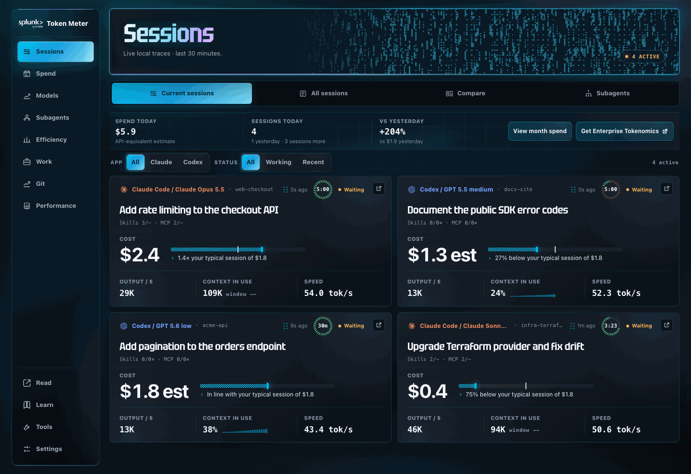
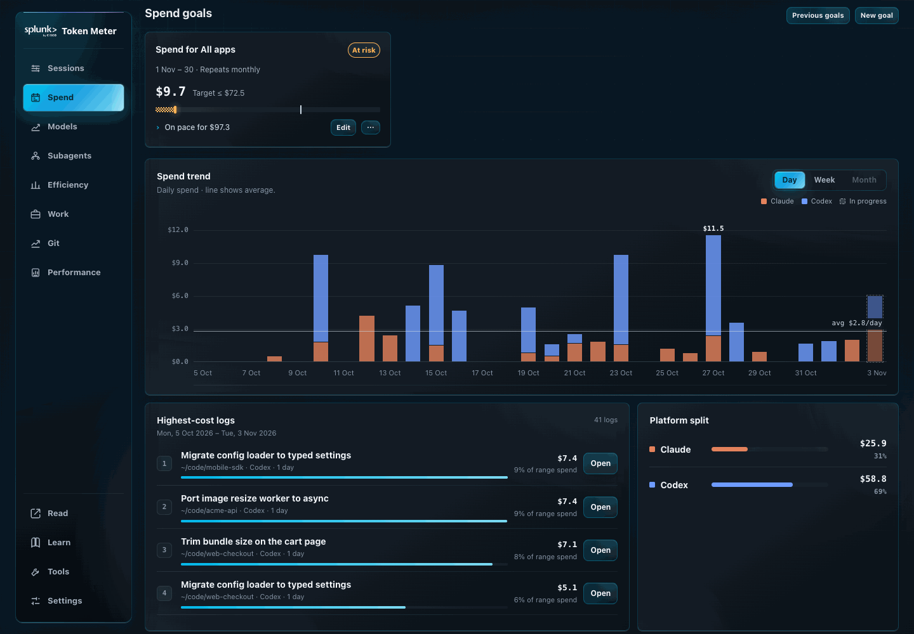
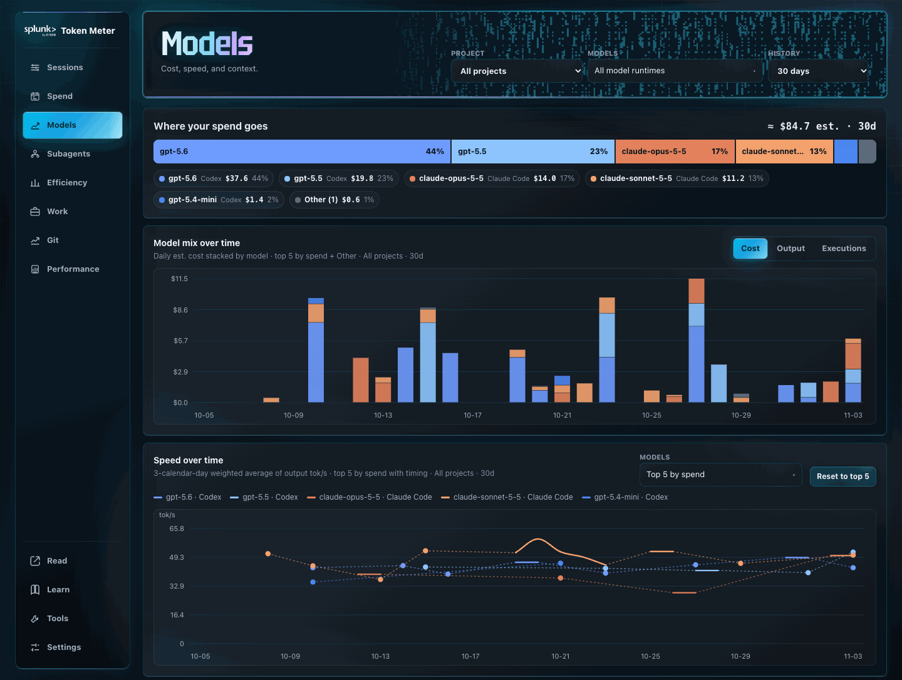
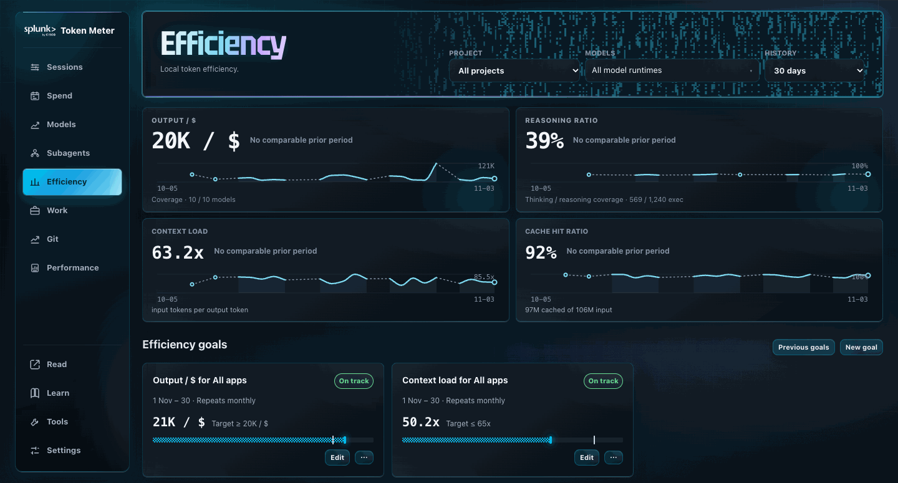
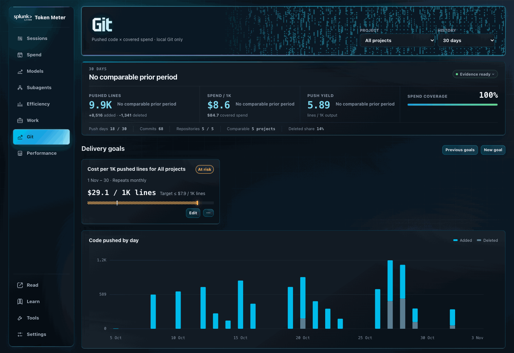
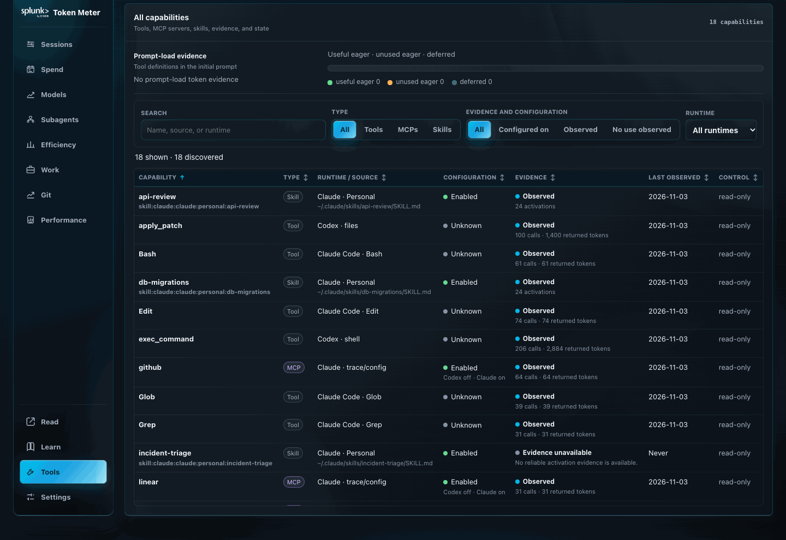

Live runs
Cost, context pressure, cache, pace, and the latest execution for every running session.
SESSIONS / MENU BARLocal-first / Open source
See what every agent run costs while it runs: tokens, estimated spend, context, cache, and tool calls for Claude, Codex, Cursor, OpenCode, Kiro, Pi, and Antigravity. Read from the traces already on your machine.
git clone https://github.com/splunk/token-meter.git
./token-meter/scripts/installRequires Python 3.8+ · Xcode Command Line Tools · curl
git clone https://github.com/splunk/token-meter.git
./token-meter/scripts/installRequires Python 3.8+ · systemd user services · GTK 3 · PyGObject · Ayatana AppIndicator · curl
GNOME may also need an AppIndicator/KStatusNotifierItem extension.
powershell.exe -NoLogo -NoProfile -ExecutionPolicy Bypass -Command '$p=Join-Path $env:TEMP "token-meter-bootstrap.ps1"; try { Invoke-WebRequest -UseBasicParsing "https://raw.githubusercontent.com/splunk/token-meter/main/scripts/bootstrap-windows.ps1" -OutFile $p; & $p } finally { Remove-Item -LiteralPath $p -Force -ErrorAction SilentlyContinue }'Requires Windows PowerShell · WinGet (Microsoft App Installer)
Beta The Windows extension is in beta.
http://127.0.0.1:8722
No administrator access required.
Surfaced by Token Meter on one engineer's laptop, estimated at public list prices.
Read the five leversCache writes were 6% of tokens and 55% of the dollars on Claude Opus 5.5.
Tokens of tool definitions loaded into prompts and never called.
Cost per subagent run, a month after switching to short, narrowly scoped tasks.
One local dashboard at 127.0.0.1:8722. Costs and selected token values can be estimates, and coverage stays visible. Screens show synthetic sample sessions.






Rebuilt here in HTML. The real one sits in the macOS menu bar, the Linux tray, or the Windows notification area.
Cost, context pressure, cache, pace, and the latest execution for every running session.
SESSIONS / MENU BAREstimated spend by day, runtime, project, and session, with machine-wide monthly budgets.
SPEND / BUDGETSCost, speed, cache, and context per model, scoped by runtime so identical names stay separate.
MODELS / EFFICIENCYPushed lines from local Git beside covered spend, plus tool, MCP, and skill evidence without contents.
GIT / TOOLSOutput tokens per covered dollar. Higher is more output for the spend.
Reasoning share of output. Stable is usually better; hard work may need more.
Input tokens per output token. Lower carries less context into each response.
Share of cache-covered input read from the prompt cache. Higher is usually better.
No universal score. Read movement across comparable work. Coverage remains visible: missing evidence never becomes zero. Costs and selected token values can be estimates.
Token Meter reads supported local stores and serves the dashboard on 127.0.0.1. It is not a hosted analytics service.
Supported local traces and databases are read, never rewritten.
No prompt or response content appears in the dashboard, native companion, or bounded MCP projections.
No API keys for trace analysis. No Token Meter analytics or telemetry leaves your machine.
Make it useful. Keep it local.
Install Token Meter